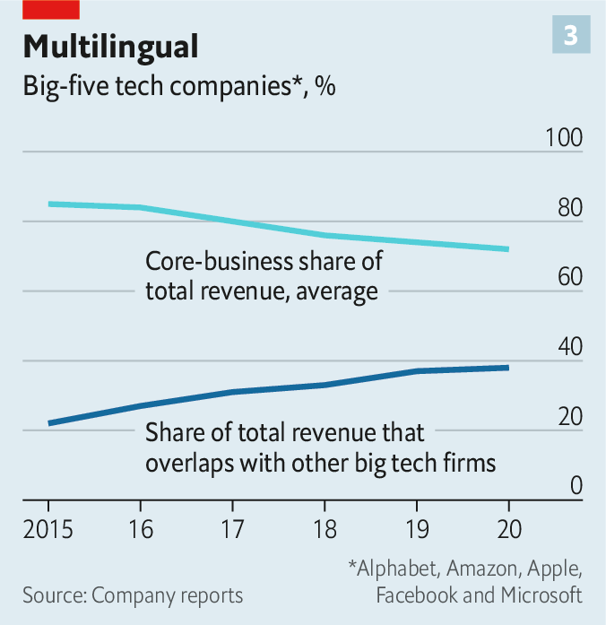

2021-03-14T14:35:07+00:00
技术与竞争
合谋与冲突
科技行业的竞争新规则
科技公司的名字稀奇古怪。谷歌和Zoom在英语里是动词。阿里巴巴庞大的电子商城的名字“淘宝”在中文里也是动词。优步和它的中国网约车竞争对手滴滴的名字都已是“出租车”的同义词。Facebook在越南就是互联网的意思，越南人大多通过这个社交平台访问互联网。亚马逊、苹果、微软和奈飞（Netflix）这些名字还不能直接拿来指称在线购物、智能手机、办公软件和视频流，但或许这么用也无妨。
在科技界批评人士看来，这些能界定行业的独特名称暗藏险恶，在一个词里浓缩了每家公司在自己的数字领地占据的统领地位——其中有些可能得之不义。去年12月，美国的反垄断机构起诉Facebook涉嫌反竞争行为，中国的反垄断机构也对阿里巴巴展开了调查。在针对谷歌的三起反垄断诉讼中，其中一起的核心是一项协议，谷歌按该协议每年向苹果支付80至120亿美元（大约相当于苹果全球利润的五分之一），以确保谷歌的搜索引擎在苹果设备上作为默认引擎出现。谷歌还被指与Facebook达成私密协议，不支持由新闻出版商投资的一个竞争广告系统。
试图切断公司名称与产业关联性的行动正愈演愈烈。电子游戏公司Epic Games称苹果在其App Store中敲诈应用开发人员，已在美国和欧洲投诉苹果。2月22日，英国的竞争监管机构警告称，即将对科技巨头展开反垄断调查。欧盟正在制订法规以限制这些公司的势力。澳大利亚刚刚通过一项法律，将要求这些公司为与搜索结果或社交媒体信息流一起显示的新闻向澳大利亚媒体支付更多费用。
所以，在外界看来，科技行业是一个一团和气的俱乐部，成员间互不干涉，或者更糟的是，还帮助彼此巩固各自的垄断地位。而巨头只会变得越来越强大。去年，全球市值最高的十大数字公司大赚了2610亿美元的净利润，因为在社交隔离的情况下，人们依赖它们来办公、娱乐、购物和社交。它们的总市值猛增了3.9万亿美元，超过了整个英国股市的总值，反映出投资者预期它们的影响力还会进一步扩张。
科技巨头们不这么看。阿里巴巴、苹果、谷歌和Facebook表示，它们的各种做法完全正当。这些美国公司之间确实有合作，但只是为了确保它们的产品之间的互操作性。实际上，所有科技巨头都坚称它们在大多数情况下并没那么亲密，而是激烈竞争。微软的总裁布拉德·史密斯（Brad Smith）认为科技公司之间的关系是竞争占八成，合作占两成。Facebook的首席执行官扎克伯格最近称苹果是“我们最大的竞争对手之一”。“每天醒来，我们都面临无比大的竞争压力。”与苹果的老板库克关系密切的高管菲尔·席勒（Phil Schiller）表示。
最近几周，科技巨头之间的互相攻击确实多过友好合作。Facebook投放的广告攻击苹果新的iPhone隐私设置，该设置会询问用户是否希望禁用其他公司的应用和网站的追踪功能。按Facebook的说法，这将伤害那些需要通过追踪功能向客户投放广告的小企业。库克这边一直在暗示Facebook对待用户数据的态度轻率。
微软在2月22日表示将与欧洲的新闻出版商合作开发一个系统，类似于谷歌和Facebook在澳大利亚反对的那个系统。微软在上个月率先表示支持澳大利亚政府的计划时，谷歌反击说，“（微软）当然巴不得竞争对手被收取不切实际的费用，好增加自己的市场份额。”这里指的是微软的搜索引擎必应。
这些口头上的交锋反映出，在科技行业内部有一种感觉越来越强烈——大企业正受到攻击。尽管占支配地位的公司依然强大，有时彼此还很友好，但在一个又一个数字市场中，挑战者正在攻城略地。传统行业里的领军者终于真正启动了数字化，例如沃尔玛推进线上零售，迪士尼拓展流媒体业务。规模稍逊的科技公司（例如电商Shopify，或云计算和商业软件服务商Salesforce）也启动了入侵模式。大量涌入创业公司的资金很容易转化为更多的竞争。最重要的是，科技界最强大的巨头正越来越起劲地踏入彼此的地盘。
决定性时刻
这么看来，随着科技业步入竞争更为激烈的新阶段，赢家通吃式的抢地盘时代正在走远。果真如此的话，科技业的名称词典可能会变得复杂得多。
这种转变在中国走得最远。中国最大的两个数字集团阿里巴巴和腾讯已经在多个市场上相互竞争，同时还要与新兴对手竞争。券商中信里昂的数据显示，阿里巴巴在中国电商市场的份额在2013达到62%的顶峰，去年为51%（见图表1）。一度分散的竞争正在集中化。紧随其后的两家公司拼多多和腾讯入股的网上商城京东总共占领了24％的市场。中信里昂估计到2026年该比例会达到33％。腾讯的微信支付和阿里巴巴的支付宝一直在竞争成为中国购物者首选的数字钱包。去年，腾讯宣布将在未来五年内投资5000亿元，一部分将用于在云计算领域追赶阿里巴巴。
美国科技业的格局也开始发生变化。本刊研究了美国11个大型科技市场，它们去年的总收入共计1.6万亿美元。根据我们的计算（不可避免地包含一些估计），在过去的五年中，在应用商店、商业软件、云计算和在线广告领域排名第一的公司的市场份额一直没有增长。2015年以来，在外卖、网约车和视频流媒体领域排名第一的公司的市场份额有两位数的下降。
在大多数市场中，即便第一名的市场份额有小幅增加（比如在电子商务和智能手机市场），紧随其后的两大挑战者的合并市场份额增长更快（见图表2）。11个市场中有六个的二、三名如今占据了三分之一或以上的份额，在2016年仅有两个市场是这样。前三名以外的追赶者则远远落后。
一些挑战者并非来自科技巨头的老家硅谷和西雅图。迪士尼于2019年底推出了新的流媒体服务，如今在全球已有9500万订户，达到这一数字的速度比奈飞快了近十倍。沃尔玛多年来在线上购物上的投资在疫情期间开始获得回报。百思买（Best Buy）、家得宝（Home Depot）和塔吉特（Target）等其他实体零售商也都升级了数字业务投资。成立14年的加拿大公司Shopify目前控制着十分之一的美国电商市场，在2015年是七十分之一。它的市值在过去两年增长了六倍，达到1500亿美元。
这一竞争新格局中最显著的特征也许就是美国五大巨头间的交叠越来越多。谷歌母公司Alphabet、亚马逊、苹果、Facebook和微软之间也开始像阿里巴巴和腾讯那样相互竞争，规模甚至更大。投资全球科技公司的大型资产管理公司巴美列捷福（Baillie Gifford）的詹姆斯·安德森（James Anderson）尚未在这些公司的竞争中看到中国巨头身上那股“一决雌雄的劲头”。但正如券商盛博的马克·史穆里克（Mark Shmulik）借用现代计算的基础布尔代数的术语所说的那样，科技巨头之间正在从“或”的析取关系转向“和”的合取关系。
诚然，确保彼此的系统能无缝协同对这几家公司都有好处。消费者想要访问谷歌的搜索引擎和Gmail邮箱或Facebook的社交网络的需求促进了对iPhone的需求。亚马逊提供的廉价云计算转化成了苹果App Store里更多的应用。亚马逊是谷歌最大的广告客户之一。微软的Surface Duo智能手机获授权运行安卓操作系统。
五巨头的高层和那些自视绝顶聪明的人也心知肚明，因此尽管它们近来针锋相对，但多数情况下还是彼此尊重的。萨蒂亚·纳德拉（Satya Nadella）在2014年接任微软的首席执行官后，放弃了一个支持保护隐私的广告活动，该活动指称谷歌查看用户的电子邮件以投放定向广告。微软内部人士称，纳德拉与某些谷歌工程师之间的交情可能影响了他的决定。纳德拉还决定停止尝试在搜索引擎领域赶超谷歌。
竞争词源
科技巨头之前的许多相互入侵都惨淡收场。2010年代初，所有大公司都试图进入设备制造领域。还记得亚马逊的Fire Phone吗？微软的Zune音乐播放器没成为另一个iPod，而必应也没流行成一个动词。许多iPhone用户都用谷歌地图导航，而不用不受待见的苹果自带地图。Facebook早期涉足电商领域的尝试Facebook Gifts同样反响平淡。
的确，美国这五大巨头的收入大头仍然来自那些令它们成为了万亿美元或准万亿美元公司的业务，大部分情况下利润也是。去年，在线广告分别为Alphabet和Facebook带来了80％和98％的销售收入。2020年苹果的收入足有80％来自它那些时尚的设备（主要是iPhone）。微软继续靠商业软件带来一大部分收入，亚马逊靠的还是它的在线商城，尽管它大部分利润（相对微薄）来自云计算部门AWS。
然而，这些比例在过去还要更高。随着首次购买iPhone的人数下降，苹果通过进入支付、金融和娱乐业务减少了对iPhone、iPad和Mac电脑的依赖。服务现在占到苹果总收入的20％，是五年前占比的两倍。其中一些服务如视频或音乐流与亚马逊Prime Video和Prime Music竞争，还与奈飞和迪士尼（视频流）或Spotify（音频流）等专门经营这些业务的公司相竞争。亚马逊的电商收入份额已从2015年的87％下降至72％，现在它十分之一的销售额来自云计算，6％来自数字广告。去年Alphabet的广告收入占比相比2015年降低了十个百分点。
核心业务让出的那些份额正由越来越多的新业务填补。许多新业务需要五大巨头涉足彼此的领域。现在，它们收入的近五分之二来自存在交集的业务，在2015年时为五分之一（见图表3）。根据盛博的说法，如果将科技业划分为20个左右的业务领域，从智能手机、智能音箱，到即时通信和视频会议等，那么每个巨头都会出现在其中大部分领域中。
对新业务的投入有许多还没有赚到多少钱。但这些巨头的超高市值（25到82倍的市盈率）需要宏大的增长计划支撑。随着主营业务逐渐成熟，发展放缓，它们必须在其他领域寻求新的增长源。一位硅谷风险投资家说，在反垄断机构高度警惕之时，要吞并有竞争力的创业公司（或以其他方式消除它们的威胁）变得越来越难。“增长可能要依赖在已知的大市场中凭借内部力量展开竞争。”
随之而来的相互踩踏有几种形式。首先，这些公司越来越多地销售相同的产品或服务。其次，它们以不同的商业模式提供类似的产品和服务，例如免费提供竞争对手要收费的东西（或者反过来，收费提供那些竞争对手免费提供给用户以换取数据卖给广告商的服务）。第三，它们都在盯着人工智能（AI）或无人驾驶汽车等相同的新生市场。
最激烈的直接竞争发生在云计算领域。这个630亿美元的市场每年增长40％，华尔街预计它在未来一二十年内将成为万亿美元市场。亚马逊的老板贝索斯曾开玩笑说，巴诺书店（Barnes＆Noble）几个月之内就明白了必须复制亚马逊的Kindle电子阅读器，但是他那些天才的科技竞争对手花了几年的时间才明白它们应该模仿AWS。最终它们还是醒过神来。
微软创建11年的云计算部门Azure年收入估计约为200亿美元。盛博预计，到2024年，云计算在谷歌收入的占比将从2020年的7％升至12％。鉴于该部门的重要性，谷歌在1月单独公布了其云计算业务的运营业绩（2020年亏损56亿美元）。
受疫情大力推动的电子商务是另一个被争抢的地盘。Facebook名为Marketplace的二手商品市场已经运营一段时间了。去年5月，Facebook推出了Facebook Shops，更直接地挑战亚马逊，为已经在用Facebook或其姊妹应用Instagram展示产品的约1.6亿家企业提供了一个销售产品的途径。Facebook和谷歌也都在与Shopify合作，让Shopify的商家可以在它们的平台上销售产品。就连微软都在盯着零售，尽管走了条更迂回的路线——它计划把自动收银技术卖给沃尔玛。
社交媒体是Facebook的主要收入来源，它的竞争对手也盯上了这一块。去年，微软希望通过收购中国所有的短视频应用TikTok来增强它包括Surface平板电脑和Xbox游戏机在内的消费者业务。今年，它考虑过收购照片分享网络Pinterest。两笔交易都未达成，但微软的意图已经表露无遗。
亚马逊也一样。它“得是疯了”才会不关注社交媒体，一位与这家公司走得比较近的业内高管这样说道。2013年，亚马逊收购了被称为“图书界的Facebook”的图书点评和推荐平台Goodreads。成百上千万用户在亚马逊的网购平台上给购物打分，他们有可能在未来孕育出一个新的社交网络。“亚马逊进入社交网络比Facebook进入网购要容易。”一位亚马逊前高管很肯定地说，因为亚马逊掌握的物流配送系统比社交网络更难靠一己之力建成。
然后是搜索引擎。微软受到自己在云计算上取得的成功鼓舞，可能会开始在性能不错但市场份额很低的必应上投入更多。亚马逊已经得出结论，如果自己电商平台上的商家想向网购者展示商品，为什么让谷歌独赚这笔钱呢？亚马逊的搜索广告业务与谷歌相比仍是小巫见大巫。但如今大多数产品搜索都是从亚马逊的应用或网站上开始的。
苹果也怀揣着搜索引擎的抱负。2018年，它挖走了谷歌搜索和AI的负责人约翰·詹南德雷亚（John Giannandrea）。人们已经注意到，网络爬虫Applebot最近越来越活跃，大概是在收集大量用于训练的数据。一位科技业内人士说，苹果的语音助手Siri“基本上就是一个搜索引擎”。他补充说，富有的iPhone用户所提出的问题最有价值，苹果可以通过回答这些问题“捞到油水”。
和亚马逊与谷歌正面竞争广告收入不同，苹果似乎不太会想要直接从搜索广告中获利。它的搜索项目可能是想吸引注重隐私的用户深入它安全的“围墙花园”中，这自然会让扎克伯格十分懊恼。
这也说明了第二种竞争行为。摧毁谷歌或Facebook的商业模式可能不是库克明言的目标。但这还是在逼迫扎克伯格和Alphabet的桑达尔·皮查伊（Sundar Pichai）这两个依赖广告的巨头老板推出能说服用户“同意”在苹果设备上启用追踪功能的服务和产品。
至于皮查伊，他也在通过免费提供各种产品做类似的事情，这些产品包括基于云的文字处理软件、电子表格和视频聊天应用环聊（Hangouts）、Alphabet的机器学习软件TensorFlow，以及云计算项目Kubernetes。一些观察家认为，这些靠谷歌广告收入支撑的免费产品意在创造一个完全竞争性的利润“沙漠”，让竞争对手无意进入其中，从而把整个撒哈拉的数据都留给谷歌。
这些公司并不是自己选择进入新的技术领域，而是被拖入其中——往往是被用户拖进去的。一位前高管说，亚马逊认为互联网和海量数据意味着如果你进入了一个业务领域，就必须进入相邻那一个。电商和社交媒体就是一个很好的例子。零售商在社交媒体上为买家组织的大型虚拟“社交购物”狂欢风靡中国，可能很快也会在西方流行起来。
拥有几亿乃至几十亿的客户群使得科技平台可以轻松而低成本地多元化发展。例如Facebook会推出Marketplace就是因为它发现有很多人在Facebook群组中买卖各种东西，负责Facebook核心产品的哈维尔·奥利文（Javier Olivan）指出。
随着科技巨头从紧盯彼此转向注目未来，这个过程看起来很可能会加剧。结果它们经常都望向了相同的方向：数据和AI。五大巨头中的四家已经推出了数字助理，希望它们成为消费者接入互联网的主要门户。这些巨头也全都在垂涎支付业务，尤其是想到PayPal近年来取得的成功——它从Visa和万事达手中抢夺了市场影响力。
巨头们正在向雄心勃勃的AI项目注入数以十亿美元计的资金。苹果已与多家汽车制造商洽谈生产一款无人驾驶汽车。迄今为止，在五巨头中，无人驾驶汽车一直都是Alphabet的子公司Waymo的地盘。虽然还没有任何成形的协定，但几乎可以肯定“苹果车”的想法不会是昙花一现。去年，亚马逊收购了无人驾驶创业公司Zoox。阿里巴巴和中文搜索引擎百度也都对汽车感兴趣。
并非方方面面都有改善。手机领域的竞争就仍然不足。谷歌的安卓和苹果的iOS这两大移动操作系统延续双头垄断。它们的应用商店也是如此。在线广告市场总体看来竞争更加激烈，但目前仍不清楚亚马逊在搜索上是否真的和谷歌在同一层级竞争，或者TikTok在社交媒体领域是否构成Facebook的直接对手。
科技巨头还变得擅长扮演反垄断裁判的角色，让潜在竞争者忙于捍卫自己的核心业务不受监管干预，从而无暇入侵其他市场。“大家都急着说不是我们搞垄断，是他们。”一位科技高管说。2000年代末，微软组织了一个企业联盟来反对谷歌在搜索领域的支配地位，把反垄断的压力转移到了谷歌身上。现在包括本地搜索和点评网站Yelp在内的联盟成员再次跃跃欲试反对谷歌，业内人士笑称微软的“潜伏者”又活跃了起来。
哥伦比亚大学法学院的丽娜·可汗（Lina Khan）为美国国会一个负责调查科技巨头的委员会提供法律咨询。她说这些巨头在云计算和语音助手等领域有些小冲突。但她说它们并未在核心地盘交火，而且，将竞争比作打仗可能会让人们忽视这些公司通过更广泛的方式用它们的集体垄断地位互惠互利。
新造词
如果小冲突加剧，可能会导致科技巨头的盈利能力下降。在竞争最显著的云计算领域，利润空间已经在收紧。按巴美列捷福的安德森的说法，谷歌对AWS和Azure的准双寡头垄断的冲击已经压低了价格。腾讯对云的投资应该会更增压力。
过去十年中，Alphabet的营业利润率下降了13个百分点。就连苹果的营业利润率也比2012年的峰值低了10个百分点。Facebook的利润率则从2017年的高达50％跌至不到40％。这些公司大多对自己各项业务的盈利状况闭口不提。但总利润率降低的一个可能的原因是竞争加剧。另一个是进入新市场会消耗核心业务的利润。这最终可能会给同样进入这些市场的竞争对手带来压力。
认为科技巨头不是在合谋瓜分全球数字馅饼就是在小心翼翼地相互避开的假设已不再正确。一定会有许多人愿意看到不止少数几家公司为现代经济中至关重要的数字市场争个你死我活。不过，只要它们真的是在一决雌雄，这对其他所有人而言就是个好消息。
2021-03-14T14:35:07+00:00
Technology and competition
Collusion and collisions
The new rules of competition in the technology industry

TECHNOLOGY COMPANIES exhibit a curious lexical property. Google and Zoom are verbs. So, in Chinese, is Taobao, the name of Alibaba’s vast e-mall. Uber and Didi, its Chinese ride-hailing rival, are synonyms for “cab”. Facebook means, simply, the internet in Vietnam, where people mostly access the web through its social networks. Amazon, Apple, Microsoft and Netflix are not literally bywords for, respectively, online shopping, smartphones, office software and video-streaming—but they might as well be.
To tech’s critics, these definitional regularities point to something insidious, encapsulating in a word the dominance that each firm wields over its digital fief—some of it possibly ill-gotten. In December American trustbusters sued Facebook for alleged anticompetitive behaviour, and Chinese ones launched an investigation into Alibaba. The central plank of one of three antitrust cases against Google is an agreement under which it pays Apple between $8bn and $12bn a year—about a fifth of Apple’s global profits—for its search engine to appear as the default on Apple devices. Google also allegedly offered Facebook a sweetheart deal not to support a rival ad system backed by news publishers.
Efforts to sever the linguistic links are multiplying. Epic Games, a video-game company that claims Apple is fleecing developers of apps in its App Store, has lodged complaints against it in America and Europe. On February 22nd Britain’s competition watchdog warned of looming antitrust actions against big tech. The European Union is working on regulations to check the firms’ power. Australia has just passed a law that would force them to pay publishers more for news displayed alongside search results or social-media feeds.
From the outside, then, the industry leaves an impression of a cosy club, whose members stay out of each other’s way—or worse, help one another perpetuate their monopolies. And the giants are only becoming more powerful. Last year the world’s ten biggest digital firms by market value raked in net profits of $261bn, as people depended on them for socially distant work, play, shopping and socialising. Their combined market capitalisation swelled by $3.9trn—more than the entire British stockmarket’s worth—implying that investors expect them to gain further clout.
Big tech sees things differently. Alibaba, Apple, Google and Facebook say their various arrangements are perfectly legitimate. The American firms co-operate, it is true, but only in order to ensure interoperability between their products. In fact, all tech titans insist, their relationships are for the most part not chummy but fiercely combative. Brad Smith, president of Microsoft, puts the balance of competition versus co-operation at “80:20” in favour of rivalry. Mark Zuckerberg, Facebook’s chief executive, recently called Apple “one of our biggest competitors”. “We feel like every day we wake up, we are under incredible competitive pressure,” says Phil Schiller, an executive close to Apple’s boss, Tim Cook.
In recent weeks big tech has certainly seen more barbs than bonhomie. Facebook has run ads attacking Apple over new iPhone privacy settings that would ask users if they wanted to opt out of being tracked across other firms’ apps and websites—which, in Facebook’s telling, would hurt small businesses that need it to reach customers. Mr Cook, for his part, has been hinting that Facebook is playing fast and loose with users’ data.
On February 22nd Microsoft teamed up with European news publishers to develop a system similar to the one Google and Facebook had objected to in Australia. When last month Microsoft first expressed support for the Australian scheme, Google shot back that “of course [Microsoft would] be eager to impose an unworkable levy on a rival and increase their market share,” referring to Microsoft’s Bing search engine.
The fighting talk reflects a growing sense within the technology industry that incumbents are under assault. Though dominant firms remain powerful, and occasionally collegial, in one digital market after another challengers are gaining ground. Old-industry champions are at last getting their digital act together, as Walmart is doing in online retail and Disney in streaming. Less-big tech, such as Shopify in e-commerce or Salesforce in the cloud and business software, is also in encroachment mode. A flood of capital pouring into startups could easily translate into even more competition. Most significantly, tech’s mightiest titans are increasingly stomping on each other’s turf.
A defining moment
On this view, the era of winner-takes-all land grabs is fading, as tech enters a new, more competitive phase. If so, the industry’s lexicon may be about to get considerably more complicated.
The shift is furthest along in China. Its two biggest digital groups, Alibaba and Tencent, already compete with each other—and with up-and-coming rivals—across a variety of markets. Alibaba’s share of Chinese e-commerce peaked in 2013 at 62%, according to CLSA, a broker. Last year it was 51% (see chart 1). Once-fragmented competition is consolidating. The next two biggest firms, Pinduoduo and JD.com, an e-emporium backed by Tencent, have captured 24% of the market between them. They could reach 33% by 2026, reckons CLSA. Tencent’s WeChat Pay and Alibaba’s Alipay have long vied to be Chinese shoppers’ digital wallets. Last year Tencent announced it will invest 500bn yuan ($70bn) over five years, a slug of it to catch up with Alibaba in cloud computing.
America’s tech landscape is beginning to change, too.
In most markets, even where the incumbent’s share edged up, as it has in e-commerce and smartphones, the aggregate share of the next two biggest challengers rose faster (see chart 2). In six of the 11 areas the two runners-up now account for a third or more of the market, up from two areas in 2016. Stragglers outside the top three are being left in the dust.
Some of the up-and-comers hail from beyond big tech’s homes in Silicon Valley and Seattle. Disney’s new streaming service has signed up 95m subscribers globally since its launch in late 2019, reaching that number nearly ten times faster than Netflix did. Walmart’s years of investment in online fulfilment began to pay off in the pandemic. Other bricks-and-mortar retailers such as Best Buy, Home Depot and Target have also upped their digital game. Shopify, a 14-year-old Canadian firm, now controls a tenth of the American e-commerce market, up from one-70th in 2015. Its market capitalisation has risen seven-fold in the past two years, to $150bn.
Perhaps the most salient feature of the new grammar of competition is the growing overlap between America’s five tech behemoths. Alphabet (Google’s parent company), Amazon, Apple, Facebook and Microsoft are beginning to echo, on an even grander scale, the rivalry between Alibaba and Tencent. James Anderson of Baillie Gifford, a large asset manager that invests in tech firms around the world, does not yet see the “fight-it-out-on-the-beaches spirit” of the Chinese titans. But as Mark Shmulik of Bernstein, a broker, puts it, in a nod to the Boolean algebra that underpins modern computing, big tech is moving from the disjunctive world of “or” to the conjunctive world of “and”.
To be sure, the companies have an interest in ensuring their systems work seamlessly together. Demand for iPhones is encouraged by consumers’ desire to access Google’s search engine and Gmail, or Facebook’s social networks. Cheap cloud computing provided by Amazon translates into more apps for Apple’s App Store. Amazon is one of Google’s biggest advertisers. Microsoft licenses Android for its Surface Duo smartphone.
The quintet’s senior executives and cleverest clogs also know and, recent sniping notwithstanding, mostly respect each other. When Satya Nadella took over as Microsoft’s chief executive in 2014, he binned a pro-privacy ad campaign alleging that Google scanned emails to serve targeted adverts. According to Microsoft insiders his friendships among Google engineers probably played a role in his decision. Mr Nadella also decided to stop trying to out-Google Google in search.
The etymology of competition
A lot of earlier incursions big tech firms made against each other ended in tears. In the early 2010s all the big companies tried getting into device-making; remember Amazon’s Fire Phone? Microsoft’s Zune music player was no iPod and Bing is no verb. Many iPhone users navigate with Google Maps, not Apple’s unloved alternative. Facebook Gifts, the social network’s early foray into e-commerce, proved about as welcome as yet another pair of socks.
Indeed, the five American giants continue to derive the bulk of their revenues and, for the most part, profits from the businesses which made them into trillion- or near-trillion-dollar companies. Last year online ads generated 80% of sales at Alphabet and 98% at Facebook. Fully 80% of Apple’s revenues in 2020 came courtesy of its sleek devices (chiefly iPhones). Microsoft continues to rely on business software for a large chunk of revenues, and Amazon on its online emporium, though most of its (comparatively meagre) profits were generated by its cloud-computing arm, Amazon Web Services (AWS).
However, these figures used to be higher. With the number of first-time iPhone buyers declining, Apple has reduced its reliance on iPhones, iPads and Mac computers by moving into payments, finance and entertainment. The proportion of total revenue from services, at 20%, is double the share five years ago. Some of them, such as video- or music-streaming, compete with Amazon Prime Video and Prime Music, as well as with dedicated providers such as Netflix and Disney (for video) or Spotify (for audio). Amazon’s revenue share from e-commerce has declined from 87% in 2015 to 72%; a tenth of sales now comes from the cloud and 6% from digital advertising. The proportion that Alphabet got from advertising last year was ten percentage points lower than it was in 2015.
Those percentage points relinquished by the core are instead coming from an ever wider array of new ventures. Many involve the big five getting in each other’s way. Nearly two-fifths of their revenues now come from areas where their businesses overlap, up from a fifth in 2015 (see chart 3). If you split tech into 20 or so business areas, from smartphones and smart speakers to messaging and videoconferencing, each giant is present in most of them, according to Bernstein.
Many of these endeavours have yet to make much money. But the giants’ stratospheric stockmarket valuations—of between 25 and 82 times annual earnings—require ambitious growth plans. As their main businesses mature and slow, they must seek fresh sources of growth somewhere else. With trustbusters on high alert, snapping up startup rivals—or otherwise neutralising them—is getting harder, says a Silicon Valley venture capitalist. “Growth might depend on competing through homegrown efforts in known big markets.”
The mutual toe-treading that ensues takes several forms. First, the companies are increasingly selling the same products or services. Second, they are providing similar products and services on the back of different business models, for example giving away things that a rival charges for (or vice versa, charging for a service that a competitor offers in exchange for user data sold to advertisers). Third, they are eyeing the same nascent markets, such as artificial intelligence (AI) or self-driving cars.
Direct competition is fiercest in the cloud, a $63bn business expanding at an annual rate of 40%, which Wall Street expects to become a $1trn one within a decade or two. Jeff Bezos, Amazon’s boss, once joked that Barnes & Noble understood within months it had to copy Amazon’s Kindle e-reader but it took his genius techie rivals years to twig they should ape AWS. They got there in the end.
Microsoft’s 11-year-old Azure cloud-computing division rakes in an estimated $20bn a year in revenue. Bernstein expects cloud-computing to make up 12% of Google’s revenues by 2024, up from 7% in 2020. Acknowledging the unit’s importance, in January Google broke out the operating results of its cloud business (which lost $5.6bn in 2020).
E-commerce, which the pandemic has turbocharged, is another area being contested. Facebook has had a second-hand goods market called Marketplace for a while. In May it launched Facebook Shops to take Amazon on more directly, giving the 160m or so businesses which already use the social network or its sister app, Instagram, as a shop window a way to sell their products. Facebook and Google are also both working with Shopify, whose merchants flog theirs on their platforms. Even Microsoft is eyeing retail, albeit by a more circuitous route, with plans to sell automated checkout technology to Walmart.
Social media—Facebook’s bread and butter—are likewise in rivals’ sights. Last year Microsoft hoped to beef up its consumer business, which includes Surface tablets and the Xbox video-game console, by buying TikTok, a Chinese-owned short-video app. This year it considered acquiring Pinterest, a photo-sharing network. Neither deal came to pass, but it was a clear statement of Microsoft’s intent.
Amazon, too, “would be crazy” not to look at social media, says an executive close to it. In 2013 it bought Goodreads, a platform where people rate books and find recommendations, which has been described as “Facebook with books”. The millions who rate purchases on Amazon’s online-shopping platform constitute a germ of a possible future social network. A former Amazon executive wagers that “it will be easier for Amazon to go into social than for Facebook to move into shopping,” because the logistics of delivery, which Amazon has mastered, are trickier to bootstrap than a social network.
Then there is search. Microsoft, emboldened by its cloud success, could start investing more in the decent but marginal Bing. Amazon has concluded that if merchants on its e-commerce platform want to flaunt their wares to online shoppers, why let Google make all the money? Its search-ad business remains a fraction of Google’s. But these days most product searches begin in Amazon’s app or on its website.
Apple, too, harbours search ambitions. In 2018 it poached John Giannandrea, Google’s head of search and AI. People have noticed that Applebot, a web crawler, has become more active of late, presumably gobbling up data on which to train. Siri, Apple’s voice assistant, “is basically a search engine”, says one tech insider. Apple could, he adds, “skim the cream” by answering the most valuable queries—those by well-heeled iPhone users.
Unlike Amazon, which competes with Google head-on for advertising dollars, Apple seems unlikely to want to profit from search-advertising directly. Instead, its search project may be aimed at luring the privacy-conscious deeper into the safety of its “walled garden”—much to Mr Zuckerberg’s understandable chagrin.
This illustrates the second sort of competitive behaviour. Undermining Google’s or Facebook’s business model may not be the explicit aim of Mr Cook. It nevertheless forces his advertising-dependent opposite numbers, Mr Zuckerberg and Alphabet’s Sundar Pichai, to come up with services and product that would persuade users to respond “yes” to the tracking question.
Mr Pichai, for his part, is doing something similar by giving away all manner of products, from cloud-based word processors, spreadsheets and Hangouts video chat to TensorFlow, Alphabet’s machine-learning software, and Kubernetes, a cloud-computing project. Some observers see these giveaways, bankrolled by Google’s ad dollars, as an attempt to create a perfectly competitive profit desert that rivals have no incentive to enter—leaving Google with a Sahara’s worth of data.

Rather than electing to enter new technology niches, the companies are being dragged in, often by their users. As Amazon sees it, according to a former executive, the internet and copious amounts of data mean if you are in one business, you simply have to get into the one over the fence. E-commerce and social media offer a good example. “Social shopping”, where retailers organise mass virtual sprees for buyers on social media, are all the rage in China and may soon be in the West.
Thanks to customer bases in the hundreds of millions or billions, technology platforms can diversify easily and cheaply. Facebook’s Marketplace, for one, started after the company spotted large numbers of people buying and selling various things in Facebook groups, notes Javier Olivan, who oversees the company’s core products.
This process looks likely to intensify as the firms shift from looking over the others’ shoulders to gazing ahead. Often they end up staring in the same direction: towards data and AI. Four of the giants already offer digital assistants, which they would love to become consumers’ primary gateway to the internet. Everyone is also hungrily eyeing payments, especially in light of the recent success of PayPal, which has been gaining clout at the expense of Visa and Mastercard.
Big tech is pouring billions into ambitious AI projects. Apple has been in talks with several carmakers to build a self-driving car, which within the tech quintet has hitherto been the preserve of Waymo, an Alphabet subsidiary. Nothing has materialised but the idea of an Apple car is almost certainly here to stay. Last year Amazon bought Zoox, a self-driving startup. Alibaba and Baidu, a Chinese search engine, are also both interested in cars.
Not everything has improved. There is still scant competition in handsets. The two dominant mobile operating systems, Google’s Android and Apple’s iOS, remain a duopoly. So do their app stores. The online advertising market looks more competitive overall, but it is unclear if Amazon is really playing in the same sandbox as Google in search, or whether TikTok is a direct rival to Facebook in social media.
The tech giants have also become adept at playing the antitrust referees to keep potential competitors busy defending their core businesses from regulators, and thus less able to encroach on other markets. “Everyone is desperate to say it’s not me, it’s the guy over there,” says a tech executive. Microsoft got the antitrust ball rolling against Google in the late 2000s by building a coalition of companies against its dominance of search. Members of that coalition such as Yelp, a local search and reviewing site, are once again agitating against Google, leading insiders to chortle about how Microsoft “sleeper cells” have come to life.
Lina Khan of Columbia Law School, who was legal counsel for a congressional committee that investigated big tech, says that the giants are skirmishing in some areas, like the cloud and voice assistants. But still, she says, they are not battling over core territory, and, what is more, describing this as a fight risks overlooking the broader ways in which the firms mutually benefit from their collective dominance.
New coinage
If the skirmishes intensify, that could lead to lower profitability for the tech companies. Margins in cloud computing, where competition is most pronounced, are already tightening. According to Mr Anderson of Baillie Gifford, Google’s tilt at the AWS/Azure quasi-duopoly has pushed down prices. Tencent’s cloud investments are likely to add pressure.
Alphabet’s operating margins have declined by 13 percentage points over the past ten years. Even Apple’s are ten percentage points below their peak in 2012. Those of Facebook have come down from a lofty 50% in 2017 to less than 40%. The companies mostly keep mum about how their individual businesses are doing. But one possible explanation for slimmer overall margins is greater competition. Another is that entry into new markets eats into profits from core businesses. This could eventually put pressure on rivals also present in those markets.
The presumption that the tech giants are either colluding to divvy up the planet's digital pie or carefully steering clear of each other is no longer right. Many people would of course prefer to see more than a handful of firms slug it out for the modern economy’s critical digital markets. Still, so long as they truly are slugging it out, that is good news for everyone else. ■
2021-03-14T14:35:07+00:00
技術與競爭
合謀與衝突
科技行業的競爭新規則
科技公司的名字稀奇古怪。谷歌和Zoom在英語里是動詞。阿里巴巴龐大的電子商城的名字“淘寶”在中文裡也是動詞。優步和它的中國網約車競爭對手滴滴的名字都已是“出租車”的同義詞。Facebook在越南就是互聯網的意思，越南人大多通過這個社交平台訪問互聯網。亞馬遜、蘋果、微軟和奈飛（Netflix）這些名字還不能直接拿來指稱在線購物、智能手機、辦公軟件和視頻流，但或許這麼用也無妨。
在科技界批評人士看來，這些能界定行業的獨特名稱暗藏險惡，在一個詞里濃縮了每家公司在自己的數字領地佔據的統領地位——其中有些可能得之不義。去年12月，美國的反壟斷機構起訴Facebook涉嫌反競爭行為，中國的反壟斷機構也對阿里巴巴展開了調查。在針對谷歌的三起反壟斷訴訟中，其中一起的核心是一項協議，谷歌按該協議每年向蘋果支付80至120億美元（大約相當於蘋果全球利潤的五分之一），以確保谷歌的搜索引擎在蘋果設備上作為默認引擎出現。谷歌還被指與Facebook達成私密協議，不支持由新聞出版商投資的一個競爭廣告系統。
試圖切斷公司名稱與產業關聯性的行動正愈演愈烈。電子遊戲公司Epic Games稱蘋果在其App Store中敲詐應用開發人員，已在美國和歐洲投訴蘋果。2月22日，英國的競爭監管機構警告稱，即將對科技巨頭展開反壟斷調查。歐盟正在制訂法規以限制這些公司的勢力。澳大利亞剛剛通過一項法律，將要求這些公司為與搜索結果或社交媒體信息流一起顯示的新聞向澳大利亞媒體支付更多費用。
所以，在外界看來，科技行業是一個一團和氣的俱樂部，成員間互不干涉，或者更糟的是，還幫助彼此鞏固各自的壟斷地位。而巨頭只會變得越來越強大。去年，全球市值最高的十大數字公司大賺了2610億美元的凈利潤，因為在社交隔離的情況下，人們依賴它們來辦公、娛樂、購物和社交。它們的總市值猛增了3.9萬億美元，超過了整個英國股市的總值，反映出投資者預期它們的影響力還會進一步擴張。
科技巨頭們不這麼看。阿里巴巴、蘋果、谷歌和Facebook表示，它們的各種做法完全正當。這些美國公司之間確實有合作，但只是為了確保它們的產品之間的互操作性。實際上，所有科技巨頭都堅稱它們在大多數情況下並沒那麼親密，而是激烈競爭。微軟的總裁布拉德·史密斯（Brad Smith）認為科技公司之間的關係是競爭佔八成，合作佔兩成。Facebook的首席執行官扎克伯格最近稱蘋果是“我們最大的競爭對手之一”。“每天醒來，我們都面臨無比大的競爭壓力。”與蘋果的老闆庫克關係密切的高管菲爾·席勒（Phil Schiller）表示。
最近幾周，科技巨頭之間的互相攻擊確實多過友好合作。Facebook投放的廣告攻擊蘋果新的iPhone隱私設置，該設置會詢問用戶是否希望禁用其他公司的應用和網站的追蹤功能。按Facebook的說法，這將傷害那些需要通過追蹤功能向客戶投放廣告的小企業。庫克這邊一直在暗示Facebook對待用戶數據的態度輕率。
微軟在2月22日表示將與歐洲的新聞出版商合作開發一個系統，類似於谷歌和Facebook在澳大利亞反對的那個系統。微軟在上個月率先表示支持澳大利亞政府的計劃時，谷歌反擊說，“（微軟）當然巴不得競爭對手被收取不切實際的費用，好增加自己的市場份額。”這裡指的是微軟的搜索引擎必應。
這些口頭上的交鋒反映出，在科技行業內部有一種感覺越來越強烈——大企業正受到攻擊。儘管占支配地位的公司依然強大，有時彼此還很友好，但在一個又一個數字市場中，挑戰者正在攻城略地。傳統行業里的領軍者終於真正啟動了數字化，例如沃爾瑪推進線上零售，迪士尼拓展流媒體業務。規模稍遜的科技公司（例如電商Shopify，或雲計算和商業軟件服務商Salesforce）也啟動了入侵模式。大量湧入創業公司的資金很容易轉化為更多的競爭。最重要的是，科技界最強大的巨頭正越來越起勁地踏入彼此的地盤。
決定性時刻
這麼看來，隨着科技業步入競爭更為激烈的新階段，贏家通吃式的搶地盤時代正在走遠。果真如此的話，科技業的名稱詞典可能會變得複雜得多。
這種轉變在中國走得最遠。中國最大的兩個數字集團阿里巴巴和騰訊已經在多個市場上相互競爭，同時還要與新興對手競爭。券商中信里昂的數據顯示，阿里巴巴在中國電商市場的份額在2013達到62%的頂峰，去年為51%（見圖表1）。一度分散的競爭正在集中化。緊隨其後的兩家公司拼多多和騰訊入股的網上商城京東總共佔領了24％的市場。中信里昂估計到2026年該比例會達到33％。騰訊的微信支付和阿里巴巴的支付寶一直在競爭成為中國購物者首選的數字錢包。去年，騰訊宣布將在未來五年內投資5000億元，一部分將用於在雲計算領域追趕阿里巴巴。
美國科技業的格局也開始發生變化。本刊研究了美國11個大型科技市場，它們去年的總收入共計1.6萬億美元。根據我們的計算（不可避免地包含一些估計），在過去的五年中，在應用商店、商業軟件、雲計算和在線廣告領域排名第一的公司的市場份額一直沒有增長。2015年以來，在外賣、網約車和視頻流媒體領域排名第一的公司的市場份額有兩位數的下降。
在大多數市場中，即便第一名的市場份額有小幅增加（比如在電子商務和智能手機市場），緊隨其後的兩大挑戰者的合并市場份額增長更快（見圖表2）。11個市場中有六個的二、三名如今佔據了三分之一或以上的份額，在2016年僅有兩個市場是這樣。前三名以外的追趕者則遠遠落後。
一些挑戰者並非來自科技巨頭的老家硅谷和西雅圖。迪士尼於2019年底推出了新的流媒體服務，如今在全球已有9500萬訂戶，達到這一數字的速度比奈飛快了近十倍。沃爾瑪多年來在線上購物上的投資在疫情期間開始獲得回報。百思買（Best Buy）、家得寶（Home Depot）和塔吉特（Target）等其他實體零售商也都升級了數字業務投資。成立14年的加拿大公司Shopify目前控制着十分之一的美國電商市場，在2015年是七十分之一。它的市值在過去兩年增長了六倍，達到1500億美元。
這一競爭新格局中最顯著的特徵也許就是美國五大巨頭間的交疊越來越多。谷歌母公司Alphabet、亞馬遜、蘋果、Facebook和微軟之間也開始像阿里巴巴和騰訊那樣相互競爭，規模甚至更大。投資全球科技公司的大型資產管理公司巴美列捷福（Baillie Gifford）的詹姆斯·安德森（James Anderson）尚未在這些公司的競爭中看到中國巨頭身上那股“一決雌雄的勁頭”。但正如券商盛博的馬克·史穆里克（Mark Shmulik）借用現代計算的基礎布爾代數的術語所說的那樣，科技巨頭之間正在從“或”的析取關係轉向“和”的合取關係。
誠然，確保彼此的系統能無縫協同對這幾家公司都有好處。消費者想要訪問谷歌的搜索引擎和Gmail郵箱或Facebook的社交網絡的需求促進了對iPhone的需求。亞馬遜提供的廉價雲計算轉化成了蘋果App Store里更多的應用。亞馬遜是谷歌最大的廣告客戶之一。微軟的Surface Duo智能手機獲授權運行安卓操作系統。
五巨頭的高層和那些自視絕頂聰明的人也心知肚明，因此儘管它們近來針鋒相對，但多數情況下還是彼此尊重的。薩蒂亞·納德拉（Satya Nadella）在2014年接任微軟的首席執行官後，放棄了一個支持保護隱私的廣告活動，該活動指稱谷歌查看用戶的電子郵件以投放定向廣告。微軟內部人士稱，納德拉與某些谷歌工程師之間的交情可能影響了他的決定。納德拉還決定停止嘗試在搜索引擎領域趕超谷歌。
競爭詞源
科技巨頭之前的許多相互入侵都慘淡收場。2010年代初，所有大公司都試圖進入設備製造領域。還記得亞馬遜的Fire Phone嗎？微軟的Zune音樂播放器沒成為另一個iPod，而必應也沒流行成一個動詞。許多iPhone用戶都用谷歌地圖導航，而不用不受待見的蘋果自帶地圖。Facebook早期涉足電商領域的嘗試Facebook Gifts同樣反響平淡。
的確，美國這五大巨頭的收入大頭仍然來自那些令它們成為了萬億美元或准萬億美元公司的業務，大部分情況下利潤也是。去年，在線廣告分別為Alphabet和Facebook帶來了80％和98％的銷售收入。2020年蘋果的收入足有80％來自它那些時尚的設備（主要是iPhone）。微軟繼續靠商業軟件帶來一大部分收入，亞馬遜靠的還是它的在線商城，儘管它大部分利潤（相對微薄）來自雲計算部門AWS。
然而，這些比例在過去還要更高。隨着首次購買iPhone的人數下降，蘋果通過進入支付、金融和娛樂業務減少了對iPhone、iPad和Mac電腦的依賴。服務現在佔到蘋果總收入的20％，是五年前佔比的兩倍。其中一些服務如視頻或音樂流與亞馬遜Prime Video和Prime Music競爭，還與奈飛和迪士尼（視頻流）或Spotify（音頻流）等專門經營這些業務的公司相競爭。亞馬遜的電商收入份額已從2015年的87％下降至72％，現在它十分之一的銷售額來自雲計算，6％來自數字廣告。去年Alphabet的廣告收入佔比相比2015年降低了十個百分點。
核心業務讓出的那些份額正由越來越多的新業務填補。許多新業務需要五大巨頭涉足彼此的領域。現在，它們收入的近五分之二來自存在交集的業務，在2015年時為五分之一（見圖表3）。根據盛博的說法，如果將科技業劃分為20個左右的業務領域，從智能手機、智能音箱，到即時通信和視頻會議等，那麼每個巨頭都會出現在其中大部分領域中。
對新業務的投入有許多還沒有賺到多少錢。但這些巨頭的超高市值（25到82倍的市盈率）需要宏大的增長計劃支撐。隨着主營業務逐漸成熟，發展放緩，它們必須在其他領域尋求新的增長源。一位硅谷風險投資家說，在反壟斷機構高度警惕之時，要吞併有競爭力的創業公司（或以其他方式消除它們的威脅）變得越來越難。“增長可能要依賴在已知的大市場中憑藉內部力量展開競爭。”
隨之而來的相互踩踏有幾種形式。首先，這些公司越來越多地銷售相同的產品或服務。其次，它們以不同的商業模式提供類似的產品和服務，例如免費提供競爭對手要收費的東西（或者反過來，收費提供那些競爭對手免費提供給用戶以換取數據賣給廣告商的服務）。第三，它們都在盯着人工智能（AI）或無人駕駛汽車等相同的新生市場。
最激烈的直接競爭發生在雲計算領域。這個630億美元的市場每年增長40％，華爾街預計它在未來一二十年內將成為萬億美元市場。亞馬遜的老闆貝索斯曾開玩笑說，巴諾書店（Barnes＆Noble）幾個月之內就明白了必須複製亞馬遜的Kindle電子閱讀器，但是他那些天才的科技競爭對手花了幾年的時間才明白它們應該模仿AWS。最終它們還是醒過神來。
微軟創建11年的雲計算部門Azure年收入估計約為200億美元。盛博預計，到2024年，雲計算在谷歌收入的佔比將從2020年的7％升至12％。鑒於該部門的重要性，谷歌在1月單獨公布了其雲計算業務的運營業績（2020年虧損56億美元）。
受疫情大力推動的電子商務是另一個被爭搶的地盤。Facebook名為Marketplace的二手商品市場已經運營一段時間了。去年5月，Facebook推出了Facebook Shops，更直接地挑戰亞馬遜，為已經在用Facebook或其姊妹應用Instagram展示產品的約1.6億家企業提供了一個銷售產品的途徑。Facebook和谷歌也都在與Shopify合作，讓Shopify的商家可以在它們的平台上銷售產品。就連微軟都在盯着零售，儘管走了條更迂迴的路線——它計劃把自動收銀技術賣給沃爾瑪。
社交媒體是Facebook的主要收入來源，它的競爭對手也盯上了這一塊。去年，微軟希望通過收購中國所有的短視頻應用TikTok來增強它包括Surface平板電腦和Xbox遊戲機在內的消費者業務。今年，它考慮過收購照片分享網絡Pinterest。兩筆交易都未達成，但微軟的意圖已經表露無遺。
亞馬遜也一樣。它“得是瘋了”才會不關注社交媒體，一位與這家公司走得比較近的業內高管這樣說道。2013年，亞馬遜收購了被稱為“圖書界的Facebook”的圖書點評和推薦平台Goodreads。成百上千萬用戶在亞馬遜的網購平台上給購物打分，他們有可能在未來孕育出一個新的社交網絡。“亞馬遜進入社交網絡比Facebook進入網購要容易。”一位亞馬遜前高管很肯定地說，因為亞馬遜掌握的物流配送系統比社交網絡更難靠一己之力建成。
然後是搜索引擎。微軟受到自己在雲計算上取得的成功鼓舞，可能會開始在性能不錯但市場份額很低的必應上投入更多。亞馬遜已經得出結論，如果自己電商平台上的商家想向網購者展示商品，為什麼讓谷歌獨賺這筆錢呢？亞馬遜的搜索廣告業務與谷歌相比仍是小巫見大巫。但如今大多數產品搜索都是從亞馬遜的應用或網站上開始的。
蘋果也懷揣着搜索引擎的抱負。2018年，它挖走了谷歌搜索和AI的負責人約翰·詹南德雷亞（John Giannandrea）。人們已經注意到，網絡爬蟲Applebot最近越來越活躍，大概是在收集大量用於訓練的數據。一位科技業內人士說，蘋果的語音助手Siri“基本上就是一個搜索引擎”。他補充說，富有的iPhone用戶所提出的問題最有價值，蘋果可以通過回答這些問題“撈到油水”。
和亞馬遜與谷歌正面競爭廣告收入不同，蘋果似乎不太會想要直接從搜索廣告中獲利。它的搜索項目可能是想吸引注重隱私的用戶深入它安全的“圍牆花園”中，這自然會讓扎克伯格十分懊惱。
這也說明了第二種競爭行為。摧毀谷歌或Facebook的商業模式可能不是庫克明言的目標。但這還是在逼迫扎克伯格和Alphabet的桑達爾·皮查伊（Sundar Pichai）這兩個依賴廣告的巨頭老闆推出能說服用戶“同意”在蘋果設備上啟用追蹤功能的服務和產品。
至於皮查伊，他也在通過免費提供各種產品做類似的事情，這些產品包括基於雲的文字處理軟件、電子表格和視頻聊天應用環聊（Hangouts）、Alphabet的機器學習軟件TensorFlow，以及雲計算項目Kubernetes。一些觀察家認為，這些靠谷歌廣告收入支撐的免費產品意在創造一個完全競爭性的利潤“沙漠”，讓競爭對手無意進入其中，從而把整個撒哈拉的數據都留給谷歌。
這些公司並不是自己選擇進入新的技術領域，而是被拖入其中——往往是被用戶拖進去的。一位前高管說，亞馬遜認為互聯網和海量數據意味着如果你進入了一個業務領域，就必須進入相鄰那一個。電商和社交媒體就是一個很好的例子。零售商在社交媒體上為買家組織的大型虛擬“社交購物”狂歡風靡中國，可能很快也會在西方流行起來。
擁有幾億乃至幾十億的客戶群使得科技平台可以輕鬆而低成本地多元化發展。例如Facebook會推出Marketplace就是因為它發現有很多人在Facebook群組中買賣各種東西，負責Facebook核心產品的哈維爾·奧利文（Javier Olivan）指出。
隨着科技巨頭從緊盯彼此轉向注目未來，這個過程看起來很可能會加劇。結果它們經常都望向了相同的方向：數據和AI。五大巨頭中的四家已經推出了數字助理，希望它們成為消費者接入互聯網的主要門戶。這些巨頭也全都在垂涎支付業務，尤其是想到PayPal近年來取得的成功——它從Visa和萬事達手中搶奪了市場影響力。
巨頭們正在向雄心勃勃的AI項目注入數以十億美元計的資金。蘋果已與多家汽車製造商洽談生產一款無人駕駛汽車。迄今為止，在五巨頭中，無人駕駛汽車一直都是Alphabet的子公司Waymo的地盤。雖然還沒有任何成形的協定，但幾乎可以肯定“蘋果車”的想法不會是曇花一現。去年，亞馬遜收購了無人駕駛創業公司Zoox。阿里巴巴和中文搜索引擎百度也都對汽車感興趣。
並非方方面面都有改善。手機領域的競爭就仍然不足。谷歌的安卓和蘋果的iOS這兩大移動操作系統延續雙頭壟斷。它們的應用商店也是如此。在線廣告市場總體看來競爭更加激烈，但目前仍不清楚亞馬遜在搜索上是否真的和谷歌在同一層級競爭，或者TikTok在社交媒體領域是否構成Facebook的直接對手。
科技巨頭還變得擅長扮演反壟斷裁判的角色，讓潛在競爭者忙於捍衛自己的核心業務不受監管幹預，從而無暇入侵其他市場。“大家都急着說不是我們搞壟斷，是他們。”一位科技高管說。2000年代末，微軟組織了一個企業聯盟來反對谷歌在搜索領域的支配地位，把反壟斷的壓力轉移到了谷歌身上。現在包括本地搜索和點評網站Yelp在內的聯盟成員再次躍躍欲試反對谷歌，業內人士笑稱微軟的“潛伏者”又活躍了起來。
哥倫比亞大學法學院的麗娜·可汗（Lina Khan）為美國國會一個負責調查科技巨頭的委員會提供法律諮詢。她說這些巨頭在雲計算和語音助手等領域有些小衝突。但她說它們並未在核心地盤交火，而且，將競爭比作打仗可能會讓人們忽視這些公司通過更廣泛的方式用它們的集體壟斷地位互惠互利。
新造詞
如果小衝突加劇，可能會導致科技巨頭的盈利能力下降。在競爭最顯著的雲計算領域，利潤空間已經在收緊。按巴美列捷福的安德森的說法，谷歌對AWS和Azure的准雙寡頭壟斷的衝擊已經壓低了價格。騰訊對雲的投資應該會更增壓力。
過去十年中，Alphabet的營業利潤率下降了13個百分點。就連蘋果的營業利潤率也比2012年的峰值低了10個百分點。Facebook的利潤率則從2017年的高達50％跌至不到40％。這些公司大多對自己各項業務的盈利狀況閉口不提。但總利潤率降低的一個可能的原因是競爭加劇。另一個是進入新市場會消耗核心業務的利潤。這最終可能會給同樣進入這些市場的競爭對手帶來壓力。
認為科技巨頭不是在合謀瓜分全球數字餡餅就是在小心翼翼地相互避開的假設已不再正確。一定會有許多人願意看到不止少數幾家公司為現代經濟中至關重要的數字市場爭個你死我活。不過，只要它們真的是在一決雌雄，這對其他所有人而言就是個好消息。